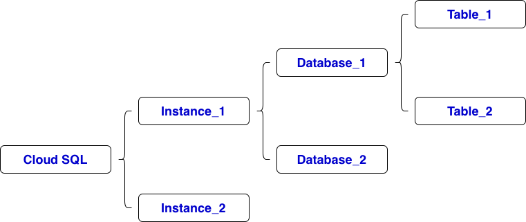

# create table to host California Housing data
CREATE TABLE california_housing (
id INT AUTO_INCREMENT PRIMARY KEY,
longitude DECIMAL(9,6) NOT NULL,
latitude DECIMAL(9,6) NOT NULL,
housing_median_age INT NOT NULL,
total_rooms INT NOT NULL,
total_bedrooms INT,
population INT NOT NULL,
households INT NOT NULL,
median_income DECIMAL(6,2) NOT NULL,
median_house_value INT NOT NULL,
ocean_proximity VARCHAR(50),
created_at TIMESTAMP DEFAULT CURRENT_TIMESTAMP
);
show databases;
show tables;
show grants;
# GRANT permissions ON database_name.* To 'username'@'%'; # the username of gcpoperationdev@gmail.com is gcpoerationdev grant select on housing_dataset.* to 'gcpoperationdev'@'%'; flush privileges; show grants for 'gcpoperationdev'@'%';